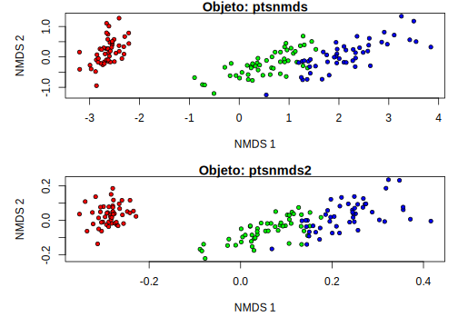

14.4 Análises de agrupamento
A função hclust() faz uma análise de agrupamento a partir de uma matriz de distância e segundo um método.
Gera um objeto de classe hclust que contem a estrutura hierárquica da similaridade entre os seus dados (a hierarquia dada pela distância mais o método de agrupamento).
Em análises de agrupamento, é normal lidar com objetos de classe dendrogram.
Podemos converter alguns objetos para esta classe usando a função as.dendrogram(), que facilita a geração de gráficos.
Outra classe importante é phylo, utilizada em objetos que contenham árvores filogenéticas (pacote ape de Paradis et al. (2020)).
Há a função as.phylo() que pode converter um objeto hclust para classe phylo e manipular o dendrograma como se fosse uma filogenia.
Também facilita a geração de gráficos.
# Vamos usar o arquivo com coordenadas dos municipios brasileiros
muni <- read.table(file = "municipiosbrasil.csv", header = T, as.is = T, sep = "\t", na.strings = c("NA", "", "NULL"))cids <- c("Rio Branco", "Cruzeiro do Sul", "Tabatinga", "São Gabriel da Cachoeira", "Manaus", "Santarém", "Porto Velho", "Humaitá", "Belém", "Macapá", "Marabá", "Boa Vista")
# filtrando os dados
vl <- muni$Municipio %in% cids & muni$Regiao == "Norte"
muni <- muni[vl, ]
rownames(muni) <- muni$Municipio
# calcula a distancia geografica entre essas cidades (em graus de latitude)
mdist <- dist(muni[, c("Longitude", "Latitude")], method = "euclidean")# veja o help de hclust e também
# os diferente métodos de agrupamento
?hclust14.4.1 Agrupamento pelo método da mínima variância
gp <- hclust(mdist, method = "ward.D2")
# visualizando
plot(gp, main = "Cidades da região norte", ylab = "Distância geográfica (dd)")
14.4.2 Agrupamento por UPGMA
gp2 <- hclust(mdist, method = "average")
plot(gp2, hang = 0.1, main = "Cidades da região norte", ylab = "Distância geográfica (dd)")
14.4.3 Agrupamento por centróides
gp3 <- hclust(mdist, method = "centroid")
plot(gp3, hang = 0.1, main = "Cidades da região norte", ylab = "Distância geográfica (dd)")
# teste outros métodos (entenda-os)Vamos converter nossos objetos gp e gp3 para objetos de classe phylo, e gerar um gráfico para cada um.
?plot.phyloplot(as.phylo(gp), type = "phylogram", label.offset = 0.1, cex = 0.8)
axis(side = 1)
mtext(side = 1, line = 2.5, text = "Distância geográfica")# ou entao, como cladograma, e nao usando o comprimento dos ramos (i.e. as distancias)
plot(as.phylo(gp), type = "cladogram", label.offset = 0.1, cex = 0.8, use.edge.length = F)# ou entao, radial, com distancias
plot(as.phylo(gp), type = "radial", label.offset = 0.1, cex = 0.8, use.edge.length = T)# usando comprimento dos ramos (distancias+relacoes)
plot(as.phylo(gp), type = "phylogram", label.offset = 0.1, cex = 0.8, use.edge.length = T)
axis(side = 1)
mtext(side = 1, line = 2.5, text = "Distância geográfica")# nao usando o comprimento dos ramos (relacoes apenas)
plot(as.phylo(gp), type = "phylogram", label.offset = 0.1, cex = 0.8, use.edge.length = F, edge.color = "red", edge.width = 2)14.4.4 Exemplo florístico
Vamos explorar a similaridade florística entre parcelas com os dados de caixetais novamente.
caixeta <- read.table("caixeta.csv", sep = ",", header = T, na.strings = c("NA", "", "NULL"))head(caixeta)| local | parcela | arvore | fuste | cap | h | especie |
|---|---|---|---|---|---|---|
| chauas | 1 | 1 | 1 | 210 | 80 | Myrcia sulfiflora |
| chauas | 1 | 3 | 1 | 170 | 80 | Myrcia sulfiflora |
| chauas | 1 | 4 | 1 | 720 | 70 | Syagrus romanzoffianus |
| chauas | 1 | 5 | 1 | 200 | 80 | Tabebuia cassinoides |
| chauas | 1 | 6 | 1 | 750 | 170 | indet.1 |
| chauas | 1 | 7 | 1 | 320 | 80 | Myrcia sulfiflora |
names(caixeta)## [1] "local" "parcela" "arvore" "fuste" "cap" "h" "especie"# vamos visualizar a similaridade florística entre parcelas
# entao geramos uma tabela de parcela vs. especies
# primeiro um vetor com valores únicos para local+parcela
# porque o número da parcela repete entre locais
parcelas <- paste(caixeta$local, caixeta$parcela, sep = "-")
tb <- table(parcelas, especies = caixeta$especie)tb[, 1:5]| Alchornea triplinervia | Andira fraxinifolia | bombacaceae | Cabralea canjerana | Callophyllum brasiliensis | |
|---|---|---|---|---|---|
| chauas-1 | 0 | 0 | 0 | 0 | 0 |
| chauas-2 | 0 | 0 | 0 | 0 | 1 |
| chauas-3 | 0 | 0 | 0 | 0 | 3 |
| chauas-4 | 0 | 0 | 0 | 0 | 2 |
| chauas-5 | 0 | 0 | 0 | 0 | 1 |
| jureia-1 | 0 | 0 | 0 | 3 | 0 |
| jureia-2 | 1 | 1 | 1 | 1 | 0 |
| jureia-3 | 0 | 2 | 0 | 0 | 0 |
| jureia-4 | 1 | 0 | 0 | 0 | 0 |
| jureia-5 | 1 | 1 | 0 | 0 | 0 |
| retiro-1 | 1 | 0 | 0 | 0 | 0 |
| retiro-2 | 9 | 0 | 0 | 0 | 0 |
| retiro-3 | 2 | 0 | 0 | 0 | 0 |
| retiro-4 | 0 | 0 | 0 | 0 | 0 |
| retiro-5 | 0 | 0 | 0 | 0 | 0 |
dim(tb)## [1] 15 43# essa tabela contém o número de indivíduos de cada espécie
# em cada parcela
# calculando um índice de distancia de Jaccard para dados de presença e ausência
# transformando em uma tabela de presença e ausencia
tb2 <- tb
tb2[tb2 > 0] <- 1Vamos utilizar a função vegdist() do pacote vegan.
?vegdistdjac <- vegdist(tb2, method = "jaccard")
class(djac)## [1] "dist"# é uma matriz de distancia entre parcela
as.matrix(djac)[1:4, 1:4]| chauas-1 | chauas-2 | chauas-3 | chauas-4 | |
|---|---|---|---|---|
| chauas-1 | 0.0000000 | 0.7500000 | 0.80 | 0.8181818 |
| chauas-2 | 0.7500000 | 0.0000000 | 0.50 | 0.5714286 |
| chauas-3 | 0.8000000 | 0.5000000 | 0.00 | 0.2500000 |
| chauas-4 | 0.8181818 | 0.5714286 | 0.25 | 0.0000000 |
Podemos fazer um NMDS com esse resultado:
onmds <- bestnmds(djac, k = 2)
# parcelas 3 e 5 tem exatamente as mesmas espécies
# vamos com colocar um valor super pequeno para essa distancia (quase zero)djac[djac == 0] <- 0.0000000000000000001# agora funciona
onmds <- bestnmds(djac, k = 2)# plotando o resultado
# pega cores e simbolos segundo o local
ll <- data.frame(local = caixeta$local, parcelas)
ll <- unique(ll)
rownames(ll) <- ll$parcelas
ll| local | parcelas | |
|---|---|---|
| chauas-1 | chauas | chauas-1 |
| chauas-2 | chauas | chauas-2 |
| chauas-3 | chauas | chauas-3 |
| chauas-4 | chauas | chauas-4 |
| chauas-5 | chauas | chauas-5 |
| jureia-1 | jureia | jureia-1 |
| jureia-2 | jureia | jureia-2 |
| jureia-3 | jureia | jureia-3 |
| jureia-4 | jureia | jureia-4 |
| jureia-5 | jureia | jureia-5 |
| retiro-1 | retiro | retiro-1 |
| retiro-2 | retiro | retiro-2 |
| retiro-3 | retiro | retiro-3 |
| retiro-4 | retiro | retiro-4 |
| retiro-5 | retiro | retiro-5 |
rn <- rownames(as.matrix(tb2))
locais <- as.factor(ll[rn, "local"])
cores <- c("red", "green", "blue")[as.numeric(locais)]
pchs <- (21:23)[as.numeric(locais)]
plot(onmds$points, pch = pchs, bg = cores, xlab = "NMDS1", ylab = "NMDS2", cex = 1.5)
legend("bottomright", legend = levels(locais), pch = 21:23, pt.bg = c("red", "green", "blue"), inset = 0.05, bty = "n", cex = 1, pt.cex = 1.5, y.intersp = 1.5)Agora vamos visualizar o resultado na forma de um agrupamento:
cluster <- hclust(djac, method = "ward.D2")
plot(cluster, ylab = "Dissimilaridade Florística (Jaccard)")Para aprimorar a figura, vamos utilizar a função as.phylo() do pacote ape (Paradis et al. 2020) para converter o objeto cluster de classe dendrogram para um de classe phylo.
pcl <- as.phylo(cluster)
par(mar = c(5, 4, 3, 3))
plot(pcl, tip.color = cores, label.offset = 0.02, cex = 0.8)
# pontos
tiplabels(pch = 21, frame = NULL, bg = cores)
# eixo
axisPhylo()
# nome do eixo
mtext(text = "Jaccard índice (0 ou 1)", side = 1, line = 2.5)
legend("topleft", legend = levels(locais), pch = 21:23, pt.bg = c("red", "green", "blue"), inset = 0.01, bty = "n", cex = 1, pt.cex = 1.5, y.intersp = 1.5)Vamos repetir essa operação considerando a abundância de espécies por parcelas contidos no objeto tb (usamos o índice de Sorensen).
tb[1:4, 1:5]| Alchornea triplinervia | Andira fraxinifolia | bombacaceae | Cabralea canjerana | Callophyllum brasiliensis | |
|---|---|---|---|---|---|
| chauas-1 | 0 | 0 | 0 | 0 | 0 |
| chauas-2 | 0 | 0 | 0 | 0 | 1 |
| chauas-3 | 0 | 0 | 0 | 0 | 3 |
| chauas-4 | 0 | 0 | 0 | 0 | 2 |
# sorensen (bray na convencao do R)
dsor <- vegdist(tb, method = "bray")onmds2 <- bestnmds(dsor, k = 2)Plota o NMDS:
plot(onmds2$points, pch = pchs, bg = cores, xlab = "NMDS1", ylab = "NMDS2", cex = 1.5)
legend("bottomright", legend = levels(locais), pch = 21:23, pt.bg = c("red", "green", "blue"), inset = 0.05, cex = 0.8, pt.cex = 1.5, y.intersp = 1.5, bty = "n")Agora, vamos plotar o agrupamento:
cluster2 <- hclust(dsor, method = "ward.D2")
pcl2 <- as.phylo(cluster2)
par(mar = c(5, 4, 3, 3))
plot(pcl2, tip.color = cores, label.offset = 0.02, cex = 0.8)
tiplabels(pch = 21, frame = NULL, bg = cores)
axisPhylo()
mtext(text = "Sorensen índice (com abundância)", side = 1, line = 2.5)
legend("topleft", legend = levels(locais), pch = 21:23, pt.bg = c("red", "green", "blue"), inset = 0.01, bty = "n", cex = 1, pt.cex = 1.5, y.intersp = 1.5)
14.4.5 Análise de Coordenadas Principais (PCoA)
A função capscale()faz uma análise de coordenadas principais (ou escalonamento multidimensional métrico ou clássico).
É parecida com uma Análise de Componentes Principais (PCA), mas é baseada em matrizes de distância.
Indica os efeitos das variáveis (parâmetro ‘’species’’) sobre os eixos.
Já a função ordiplot() do pacote vegan (Oksanen et al. 2020) permite graficar uma ordenação e os efeitos das variáveis (sites vs. species).
Leiam aqui uma comparação entre PCA e PCoA
# análise de coordenadas principais
data(iris) # carrega o conjunto de dados iris
dt <- iris[, 1:4]
mypcoa <- capscale(dt ~ 1, distance = "gower", add = F)
# quando da variação está explicado pelos eixos
resumo <- summary(mypcoa)
var.expl <- resumo$cont$importance
# veja a proporção cumulativa dos primeiros cinco eixos
var.expl["Cumulative Proportion", ][1:5]## MDS1 MDS2 MDS3 MDS4 MDS5
## 0.7468617 0.8614730 0.8946967 0.9148675 0.9289785# pega a proporção explicada por cada eixo
tt <- var.expl["Proportion Explained", ][1:5]
tt <- tt * 100
# gera um gráfico de barras com isso
barplot(tt, xlab = "Eixos MDS", ylab = "Variação explicada %")# fazendo uma figura com ordiplot
# veja o help
?ordiplot# define cor e simbolo por especie
tx <- as.factor(iris$Species)
# simbolos para os níveis
upchs <- 21:23
# cores para os níveis
cores <- rainbow(length(levels(tx)), alpha = 0.5)
# gera a figura
fig <- ordiplot(mypcoa, type = "n")fig## $species
## MDS1 MDS2
## Sepal.Length 2.0020165 -1.1230766
## Sepal.Width -0.4980034 -1.8451477
## Petal.Length 4.7366457 0.1241131
## Petal.Width 2.0004259 -0.1699399
##
## $sites
## MDS1 MDS2
## 1 -0.639346910 -0.334337841
## 2 -0.596126508 0.275887062
## 3 -0.653319917 -0.016126551
## 4 -0.636358760 0.140021832
## 5 -0.674817738 -0.392213943
## 6 -0.579155725 -0.546656575
## 7 -0.671063265 -0.221682254
## 8 -0.626572082 -0.242899975
## 9 -0.664279148 0.519847477
## 10 -0.614966776 0.122714593
## 11 -0.615294321 -0.511938998
## 12 -0.646472500 -0.228283528
## 13 -0.629731020 0.299388944
## 14 -0.722261196 0.369205877
## 15 -0.622437432 -0.762492184
## 16 -0.629173895 -0.726881442
## 17 -0.618980764 -0.564370107
## 18 -0.615191970 -0.323676845
## 19 -0.533502504 -0.626059993
## 20 -0.661661401 -0.501714454
## 21 -0.542715066 -0.306701055
## 22 -0.616801217 -0.436985257
## 23 -0.774448860 -0.405722239
## 24 -0.502107026 -0.142145011
## 25 -0.614590494 -0.211062294
## 26 -0.563614627 0.256656581
## 27 -0.568570813 -0.223711949
## 28 -0.613242267 -0.349056953
## 29 -0.604086865 -0.278203211
## 30 -0.624882833 -0.013140058
## 31 -0.598972751 0.125800250
## 32 -0.515682484 -0.298552065
## 33 -0.754577597 -0.603205019
## 34 -0.703082687 -0.661783818
## 35 -0.595079133 0.114900783
## 36 -0.618584029 -0.038036413
## 37 -0.580529961 -0.407379782
## 38 -0.713019060 -0.394969549
## 39 -0.672009242 0.335685222
## 40 -0.610912068 -0.259288303
## 41 -0.640144469 -0.309883661
## 42 -0.711752273 1.240346847
## 43 -0.695263034 -0.001191832
## 44 -0.535343600 -0.269742736
## 45 -0.591424977 -0.468299556
## 46 -0.586455349 0.286593625
## 47 -0.676667980 -0.511683895
## 48 -0.658539186 -0.011843595
## 49 -0.632891474 -0.494385045
## 50 -0.617572023 -0.153342992
## 51 0.292460092 -0.297630508
## 52 0.221901481 -0.221174100
## 53 0.339843741 -0.177183638
## 54 0.051126045 0.843979557
## 55 0.300908538 0.232678671
## 56 0.111814267 0.339772311
## 57 0.241893772 -0.355988490
## 58 -0.202930046 1.012615941
## 59 0.248080500 0.131744670
## 60 0.007993323 0.554619740
## 61 -0.182673684 1.239393372
## 62 0.139701498 0.091146313
## 63 0.059288614 0.848318236
## 64 0.209733460 0.169175362
## 65 -0.005068163 0.282602772
## 66 0.238141035 -0.120973367
## 67 0.122837631 0.109976117
## 68 0.016222534 0.467788379
## 69 0.311051516 0.770411121
## 70 -0.005187421 0.689554745
## 71 0.242920369 -0.241807259
## 72 0.125256797 0.316113208
## 73 0.340574069 0.527424554
## 74 0.171841708 0.288331764
## 75 0.189798259 0.162593178
## 76 0.238519249 0.016465753
## 77 0.338082159 0.216400983
## 78 0.387884789 -0.062564151
## 79 0.198311313 0.179797967
## 80 -0.061965220 0.599067756
## 81 -0.032867870 0.789833613
## 82 -0.073171586 0.800055220
## 83 0.047214150 0.463286100
## 84 0.309497015 0.339528626
## 85 0.093549599 0.131907477
## 86 0.167239565 -0.392321622
## 87 0.294024647 -0.147628397
## 88 0.247163015 0.723407445
## 89 0.035767804 0.161489751
## 90 0.044401583 0.682945567
## 91 0.057076478 0.581691950
## 92 0.186717733 0.064915200
## 93 0.063819056 0.555072534
## 94 -0.197650713 1.043312580
## 95 0.072437323 0.471714137
## 96 0.036318404 0.149934488
## 97 0.070911803 0.250386339
## 98 0.160141241 0.186612762
## 99 -0.184452975 0.835312341
## 100 0.070658484 0.359870688
## 101 0.544341091 -0.672495149
## 102 0.346531367 0.308880496
## 103 0.628620224 -0.234682070
## 104 0.425700939 0.044029368
## 105 0.548076546 -0.174012341
## 106 0.765563971 -0.307081449
## 107 0.135746747 0.775251807
## 108 0.639181023 -0.042979700
## 109 0.582823197 0.444894512
## 110 0.684892213 -1.355474212
## 111 0.409601151 -0.385190295
## 112 0.473494068 0.264687908
## 113 0.545418856 -0.176398832
## 114 0.367484149 0.500353060
## 115 0.429508150 0.195416139
## 116 0.472591785 -0.436408978
## 117 0.429846283 -0.095370475
## 118 0.754725571 -1.656863357
## 119 0.957805291 0.289914582
## 120 0.331639633 0.765685406
## 121 0.589370455 -0.569532674
## 122 0.300489412 0.212345851
## 123 0.812656344 0.057296569
## 124 0.391276588 0.301638945
## 125 0.506555039 -0.651564472
## 126 0.544049996 -0.518977132
## 127 0.348827435 0.208563553
## 128 0.310203435 -0.013129804
## 129 0.532244657 0.118476560
## 130 0.505511316 -0.139381364
## 131 0.686686146 0.082078523
## 132 0.706147930 -1.544179310
## 133 0.554407566 0.113570942
## 134 0.321286620 0.222228206
## 135 0.334641562 0.429203845
## 136 0.784610274 -0.342923892
## 137 0.481116598 -0.761450083
## 138 0.399240507 -0.223139690
## 139 0.284133608 0.001057007
## 140 0.533100767 -0.337438424
## 141 0.584583765 -0.365420874
## 142 0.545530105 -0.337529051
## 143 0.346531367 0.308880496
## 144 0.592570293 -0.572375037
## 145 0.585340077 -0.729980814
## 146 0.543070756 -0.160569316
## 147 0.457165585 0.481666379
## 148 0.447862748 -0.107690190
## 149 0.428195734 -0.701597535
## 150 0.296121356 -0.013659497
##
## attr(,"const")
## [1] 5.974659
## attr(,"class")
## [1] "ordiplot"# adiciona os pontos de cada linha - ATENCAO - Rode os dois comandos abaixo juntos
ordiplot(mypcoa, type = "n")
points(fig, "sites", pch = upchs[as.numeric(tx)], bg = cores[as.numeric(tx)], col = "white")# pega os scores das variáveis
# que mostram os efeitos das variáveis usadas
mls <- vegan::scores(mypcoa, display = "species")
mls| MDS1 | MDS2 | |
|---|---|---|
| Sepal.Length | 2.0020165 | -1.1230766 |
| Sepal.Width | -0.4980034 | -1.8451477 |
| Petal.Length | 4.7366457 | 0.1241131 |
| Petal.Width | 2.0004259 | -0.1699399 |
ordiplot(mypcoa, type = "n")
points(fig, "sites", pch = upchs[as.numeric(tx)], bg = cores[as.numeric(tx)], col = "white")
# plota flechas para esses efeitos
arrows(0, 0, mls[, 1] * 0.8, mls[, 2] * 0.8, length = 0.05, angle = 20, col = "black", lwd = 2)
text(mls[, 1] * 0.8, mls[, 2] * 0.8, labels = rownames(mls), col = "black", cex = 0.8, pos = 4)